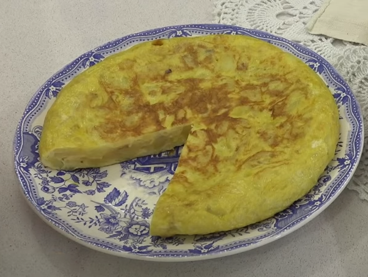

Tortilla española
Description
Tortilla española is a Spanish omelette made of egg, potato, and onion
cooked in olive oil.
Ingredients
- Eggs
- Potatoes
- Onions
- Olive oil
- Salt
Steps
- Cut the potatoes in slices of 0.5cm aprox.
- Cut the onions in thin slices
- Prepare a pan with plenty of olive oil and heat it up
- Fry the potatoes together with the onions over medium heat
- Meanwhile, crack the eggs and mix them in a bowl
- Remove the fried potatoes and onions from the pan and salt them
- Add them to the eggs and let the mix rest for at least 20min.
-
Prepare a pan with some olive oil, heat it up and when it is hot, put in
the mix
-
After 4 min. flip the tortilla over with help of a dish or pan lid and
cook for other 2 min.
- Serve and enjoy
